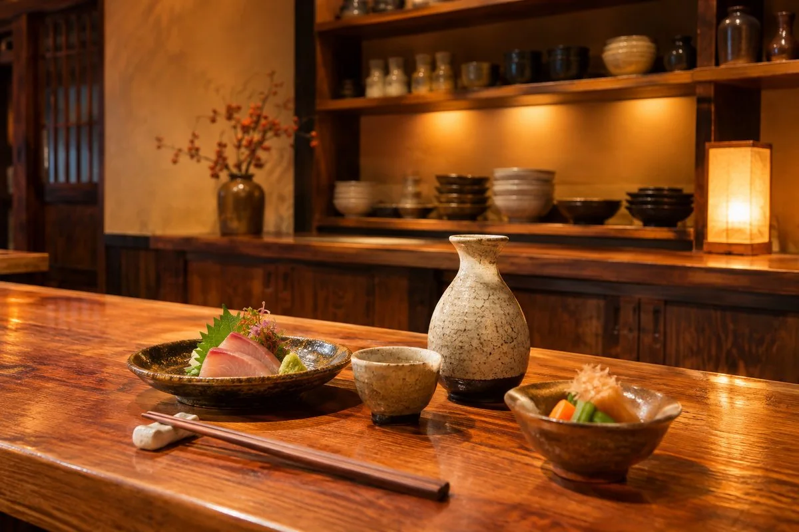
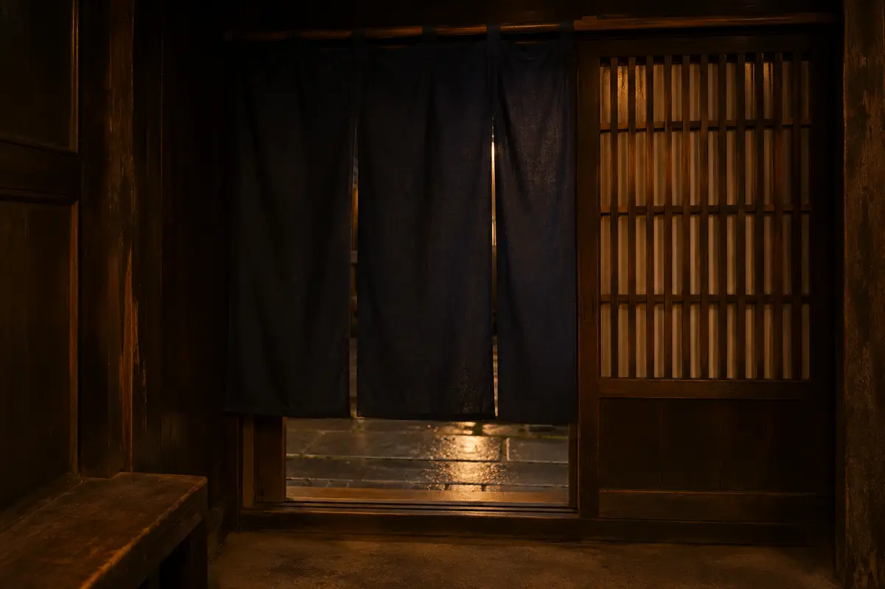
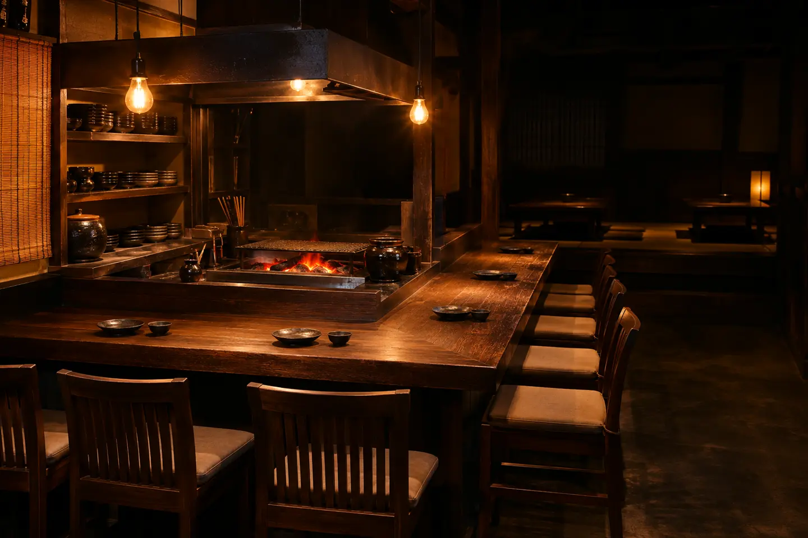
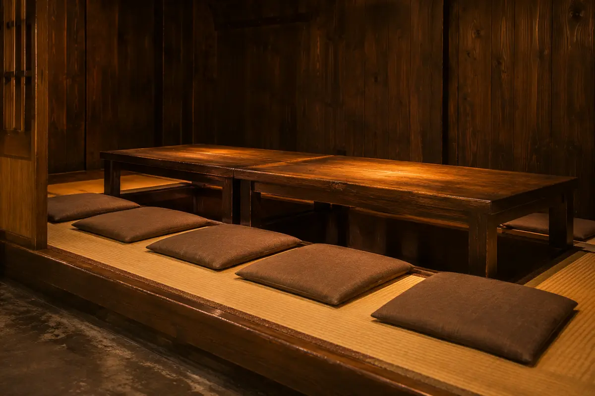

一本200円から
焼きもの
炭で焼きます。塩かたれで。
- もも220円
- ねぎま220円
- つくね250円
- 皮200円
- 砂肝200円
- 手羽先280円
- 3本盛り640円
- 5本盛り980円

ひよりびの夜

お通し440円おひとり
席に着いたら、季節の小鉢をひとつ出します。燗酒でも、生ビールでも。
焼き場を囲むL字のカウンターです。串が焼けるのを見ながら、一杯どうぞ。

席
焼き場が目の前です。4名からは、奥の小上がりへどうぞ。
カウンター
8席
おひとり、おふたりで。焼き場を囲むL字です。
小上がり
2卓
掘りごたつです。1卓に4〜5名。つなげると10名まで座れます。
たばこ
全席禁煙
灰皿は店の外に置いています。
宴会
掘りごたつの2卓をつなげて、10名まで。どのコースも、飲み放題付きです。

4,000円
2時間の飲み放題付き
お通し、刺身3種盛り、焼き鳥3本、だし巻き玉子、鶏の唐揚げ、漬物盛り、焼きおにぎりの7品。
5,000円
2時間の飲み放題付き
竹の刺身が5種盛りに、焼き鳥が5本に、締めが土鍋ご飯に替わります。
6,500円
2時間半、地酒も飲み放題
料理は松と同じ。地酒まで飲めて、30分長く座れます。
値段はおひとり分で、税込です。予約は前日の20時までに。キャンセル料は、前日が半額、当日は全額です。
場所
〇〇駅 西口から、徒歩2分です。
〇〇駅の西口を出て、左へ。
最初の角を曲がって、路地に入ります。
紺ののれんが見えたら、そこです。1階です。
のれんが出ている日は、17:00〜24:00。ラストオーダーは23:00です。日曜は休みますが、祝前日の日曜は開けます。